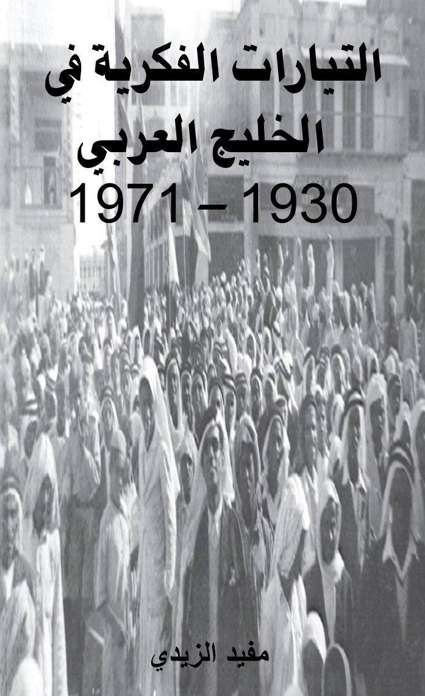

1938 to 1971, published 2000 · Book pages, Dr Mufid Al-Zaidi, Al-Tayyarat Al-Fikriya fil-Khalij Al-Arabi 1938 to 1971, Centre for Arab Unity Studies, Beirut, first edition, May 2000
Mufid Al-Zaidi, Intellectual Currents in the Arabian Gulf: Jassim Al-Qatami in the national movement, and Lolwa’s society
What it is
1. Note 144 gives a short biography: Jassim Al-Qatami was born in Kuwait in 1927, graduated from the police college in Egypt in 1952, was appointed director general of police in Kuwait in 1956 as the first Kuwaiti police officer, reaching the rank of lieutenant colonel, then under secretary of the Foreign Ministry in 1962, was elected to the National Assembly and resigned from it in 1966, and devoted himself to the clubs and to national and liberal groups. 2. He followed Dr Ahmad Al-Khatib as a speaker at the Shuwaikh Secondary celebration of 1 February 1959. 3. He appears in the National Deputies bloc, the National Gathering and the 1968 National Bloc, and among the members who resigned in 1964 and signed the 1967 statement. 4. The appendix of women’s societies lists the Women’s Cultural and Social Society, founded in Kuwait in 1963 and led by Lolwa Al-Qatami.
Why it matters
An academic history that places Jassim in the liberal and nationalist currents and Lolwa at the head of her society.
Page copies


Notes
Only the first pages are shown here. Family members who sign in can see all 16 pages.
Sources
Dr Mufid Al-Zaidi, Al-Tayyarat Al-Fikriya fil-Khalij Al-Arabi 1938 to 1971, Centre for Arab Unity Studies, Beirut, 2000, pages 127, 128, 131, 132, 134, 135, 149, 182, 202, 335, 342, 345 and 398
How this text was made: The book’s dates for Jassim’s police career differ from other sources on the site.
Open in the interactive site